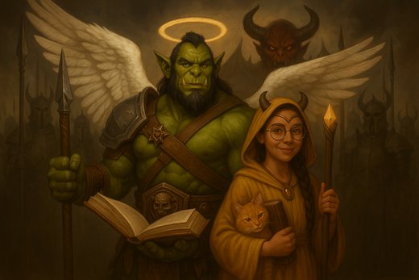
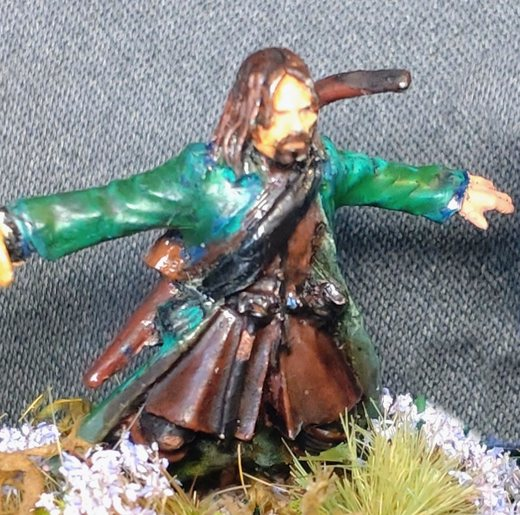

Journal des sessions
Arc 1 : Bourg-Preux et la Conque de Khêl


- Rencontre avec la sorcière rouge Silenna. Strige des quartiers Sud. Départ de Zolbrour.
- Vol de la Conque de Khêl au temple de la Déesse Douce.
- Automne 1002 CR, « La gloire de la République » : Azog et Aldaron délivrent Spada Rapazzoni, enlevé par Rosso Dagarella pour le parti belliciste de Ciudalia. Lettre de recommandation auprès du sénateur Guido Rapazzoni. Rosso Dagarella s'enfuit après un combat épique.
- Fin de l'automne 1002 CR, « La couleur de l'argent » : pour le Bailli Grugeot Papelin, Azog et Aldaron remontent jusqu'au Voïvode Brancovan de Rourika.
- Pendant l'enquête, les héros tuent le corsaire Urion Bravache et ses Écorcheurs, le brigand Chicot l'Ébréché et ses tire-laine, puis les rats-garous Carognet et Musard. Grâce à eux, le guet arrête le flibustier Borel l'Écumeur, qui est enfermé dans la prison de Bourg-Preux.
- Les héros découvrent que Brancovan est l'intermédiaire du vol de la Conque, et Cloaphilès le commanditaire.
- La Conque est rendue, mais son plus gros rubis a été retiré.
Arc 2 : L'archonte Cloaphilès

")
- À Chrysophée, les héros déclenchent une bagarre à la taverne de la Couronne Brisée. La grosse Lulette les interdit d'entrée.
- Avec Kaelis, les héros trouvent Cloaphilès dans une distorsion temporelle.
- Azog finit l'invocation du démon Epharel et vole l'auréole de Cloaphilès.
- Silenna et Cloaphilès sont tués. Les héros prennent le rubis de Wayland sur Silenna. Brancovan vole la couronne du roi idiot.
Arc 3 : Les Landes Grises


- L'armée des morts reconnaît Azog comme maître.
- Les héros s'installent dans les ruines de Garches et revendiquent les Landes Grises.
Arc 4 : Le Voïvode et le Kiriadum
")


")
")
- Invasion ouromane de Bromaël, siège de Canderas, famine annoncée.
- Djinn Ali Pashino et émeraude. Fée Embla et gobelins.
- Les héros trouvent Brancovan dans le volcan et lui prennent la couronne de Leomance.
- Rituel du Vin de Vanaël. Rencontre de Wayland, Ochlus et Kylima dans le passé. Brancovan amoureux de Kaelis.
- Fin : Brancovan commis de cuisine, hiver raccourci, rites funéraires pour l'armée des morts.
Arc 5 : Le domaine de Garches


- Restauration du château, arrivée de paysans, taxe de 25 %, milice d'Alistair.
- Azog insiste lourdement : il échange sa chambre avec celle de Gareth et Mélisande, la plus grande du château.
Arc 6 : Les Écumeurs Noirs et l'Innommable

")
- Trésor dans une grotte, tunnel de plusieurs dizaines de lieues.
- Faux paysans pirates, combat contre Kila Mille-Peaux (loup-garou, puis petite fille).
- Le dragon Aldryx porte les héros à Thalassyr. Azog égorge l'Innommable.
- Aldaron reste sur l'île en chat. Libérés de l'Innommable, Pekko et Kila s'installent au château de Garches.
Arc 7 : La fête des Mille Merveilles (en cours)


- Aldaron revient de Thalassyr avec Bort pour la fête.
- Avec la paix, la fête foraine apparaît près de Garches.
- Montagnes russes, carrières souterraines.
- La fête emprisonne les souvenirs. Cycle de l'oubli et de la guerre.
- Dans la dernière attraction, les héros rencontrent la Révérende Mère Alba, immortelle, qui est derrière la fête.
- Le magicien Basilio Smemorato veut capturer Kila. Les héros l'en empêchent, mais il vole à Aldaron la couronne de Leomance. ⚑ Les objets volés par Basilio
- « À suivre... »